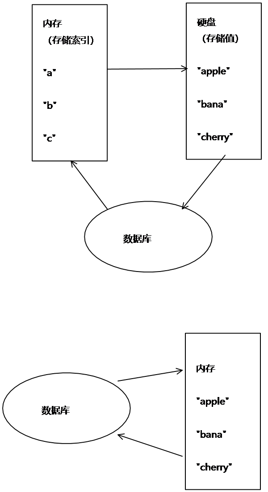

Golang的一些特性
自动垃圾回收
- 函数多返回值
多值返回仅动态语言Python有此特性 - 错误处理
说了那么多理论，怎么不实操一下。
贝壳一面（09.20）的面试官下了我的github代码，“抱怨”我怎么不用包管理器。我们知道近期官方已经推出了go module
先了解一下什么是模块，模块 ( module ) 是相关 go 包的集合，是是源代码交换 ( interchange ) 和版本化控制的基本单元
项目目录下，执行以下命令初始化
$ go mod init
执行以下命令会自动分析项目里的依赖关系同步到go.mod文件中，同时创建go.sum文件
$ go mod tidy
以上的管理依赖管理操作，所以依赖包还是在GOPATH/src目录下，go module 当然可以把包直接放在当前项目中管理
$ go mod vendor
直接使用这个命令就可以把GOPATH/src目录下的依赖包同步到当前项目目录中
事务可以一次执行多个命令， 并且带有以下两个重要的保证：
京东一面问及Redis的原子性，没答上来。。。
redis原子性操作的实现原理在于redis底层使用单线程操作
Redis事务的实现原理：
go有通常的控制流机制: if, for, switch, goto。它还有go语句以在单独的 goroutine 中运行代码。这里我想讨论一些比较不常见的问题：Defer, Panic, and Recover
3个重要关键字defer、panic、recover
defer是函数结束后执行，呈先进后出；
panic是程序出现无法修复的错误时使用，但会让defer执行完；
recover会修复错误，不至于程序终止。当不确定函数不会出错时使用defer+recover
“defer”语句调用的函数将被推迟到其外围函数返回时执行，不论是因为该外围函数执行了 return 语句，到达了其函数体的末尾， 还是因为其对应的Go程进入了恐慌过程
任何被 F 推迟的函数会在 F 返回给其调用者前执行
京东一面（0926）真题，一脸懵逼
接下来是三个例题
1 | // f 返回 1 |
这里，若被推迟的函数为函数字面，即defer后面的函数，而其外围函数在其作用域中的函数字面内拥有 已命名结果形参，即result，则被推迟的函数可在该结果形参被返回前访问并更改。 若被推迟函数拥有任何返回值，则它们会在该函数完成时丢弃
要理解上面这段话，就要了解defer的实现方式，大致就是在defer出现的地方，插入指令CALL runtime.deferproc，然后在函数返回之前的地方，插入指令CALL runtime.deferreturn。再就是明确go返回值的方式跟C是不一样的，为了支持多值返回，go是用栈返回值的，而C是用寄存器。
最最重要的一点就是： return xxx这一条语句并不是一条原子指令!
整个return过程，没有defer之前，先在栈中写一个值，这个值会被当作返回值，然后再调用RET指令返回。return xxx语句汇编后是先给返回值赋值，再做一个空的return，( 赋值指令 ＋ RET指令)。defer的执行是被插入到return指令之前的，有了defer之后，就变成了(赋值指令 + CALL defer指令 + RET指令)。而在CALL defer函数中，有可能将最终的返回值改写了…也有可能没改写。总之，如果改写了，那么看上去就像defer是在return xxx之后执行的~
于是我们有如下改写规则
改写规则是将return语句分开成两句写，return xxx会被改写成:
返回值 = xxx
调用defer函数
空的return
当然，这是在已命令结果形参下，如果不是，则不会发生修改
1 | func f() (result int) { |
再看两个例题1
2
3
4
5
6
7
8// f 返回 1
func f() (r int) {
t := 1
defer func() {
t = t + 5
}()
return t
}
⬇1
2
3
4
5
6
7
8func f() (r int) {
t := 1
r = t //赋值指令
func() { //defer被插入到赋值与返回之间执行，这个例子中返回值r没被修改过
t = t + 5
}
return //空的return指令
}
1 | // f 返回 1 |
⬇1
2
3
4
5
6
7func f() (r int) {
r = 1 //给返回值赋值
func(r int) { //这里改的r是传值传进去的r，不会改变要返回的那个r值
r = r + 5
}(r)
return //空的return
}
Redis提供了两种方式来作消息队列。
一个是使用生产者消费模式模式，
另一个就是发布订阅者模式。
前者会让一个或者多个客户端监听消息队列，一旦消息到达，消费者马上消费，谁先抢到算谁的，如果队列里没有消息，则消费者继续监听。
后者也是一个或多个客户端订阅消息频道，只要发布者发布消息，所有订阅者都能收到消息，订阅者都是平等的。
redis 消息推送（基于分布式 pub/sub）多用于实时性较高的消息推送，并不保证可靠。
其他的mq和kafka保证可靠但有一些延迟（非实时系统没有保证延迟）。redis-pub/sub断电就清空，而使用redis-list作为消息推送虽然有持久化，但是又太弱智，也并非完全可靠不会丢。
另外一点，redis 发布订阅除了表示不同的 topic 外，并不支持分组，比如kafka中发布一个东西，多个订阅者可以分组，同一个组里只有一个订阅者会收到该消息，这样可以用作负载均衡
现在不会Redis简直不敢和人打招呼。Redis以其性能和并发著称。所以用它做缓存实在是再好不过。为什么Redis那么快？

这里我们一直在强调的单线程，只是在处理我们的网络请求的时候只有一个线程来处理，一个正式的Redis Server运行的时候肯定是不止一个线程的，这里需要大家明确的注意一下！例如Redis进行持久化的时候会以子进程或者子线程的方式执行
此外还有
数据结构简单，对数据操作也简单，Redis中的数据结构是专门进行设计的；
使用底层模型不同，它们之间底层实现方式以及与客户端之间通信的应用协议不一样，Redis直接自己构建了VM 机制 ，因为一般的系统调用系统函数的话，会浪费一定的时间去移动和请求
以下也是你应该知道的几种模型，祝你的面试一臂之力！
1、单进程多线程模型：MySQL、Memcached、Oracle（Windows版本）；
2、多进程模型：Oracle（Linux版本）；
3、Nginx有两类进程，一类称为Master进程(相当于管理进程)，另一类称为Worker进程（实际工作进程）。启动方式有两种：
（1）单进程启动：此时系统中仅有一个进程，该进程既充当Master进程的角色，也充当Worker进程的角色。
（2）多进程启动：此时系统有且仅有一个Master进程，至少有一个Worker进程工作。
（3）Master进程主要进行一些全局性的初始化工作和管理Worker的工作；事件处理是在Worker中进行的。
一般来说， 如果想达到足以媲美 PostgreSQL 的数据安全性， 你应该同时使用两种持久化功能。
Redis 还可以同时使用 AOF 持久化和 RDB 持久化。 在这种情况下， 当 Redis 重启时， 它会优先使用 AOF 文件来还原数据集， 因为 AOF 文件保存的数据集通常比 RDB 文件所保存的数据集更完整。
如果你非常关心你的数据， 但仍然可以承受数分钟以内的数据丢失， 那么你可以只使用 RDB 持久化。
有很多用户都只使用 AOF 持久化， 但我们并不推荐这种方式： 因为定时生成 RDB 快照（snapshot）非常便于进行数据库备份， 并且 RDB 恢复数据集的速度也要比 AOF 恢复的速度要快， 除此之外， 使用 RDB 还可以避免之前提到的 AOF 程序的 bug
你甚至可以关闭持久化功能，让数据只在服务器运行时存在。这在用Redis实现缓存时用到
在默认情况下， Redis 将数据库快照保存在名字为 dump.rdb的二进制文件中。你可以对 Redis 进行设置， 让它在“ N 秒内数据集至少有 M 个改动”这一条件被满足时， 自动保存一次数据集。你也可以通过调用 SAVE或者 BGSAVE ， 手动让 Redis 进行数据集保存操作。
比如说， 以下设置会让 Redis 在满足“ 60 秒内有至少有 1000 个键被改动”这一条件时， 自动保存一次数据集:1
save 60 1000
快照功能并不是非常耐久（dura ble）： 如果 Redis 因为某些原因而造成故障停机， 那么服务器将丢失最近写入、且仍未保存到快照中的那些数据。 从 1.1 版本开始， Redis 增加了一种完全耐久的持久化方式： AOF 持久化
数组的大小是其类型的一部分，而切片可以具有动态大小，因为它们是围绕数组的封装
类似于数组，切片是可索引的且拥有一个长度。切片 s 的长度可通过内建函数 len获取；不同于数组的是，切片可在执行过程中被改变， 其元素可通过整数（§下标） 0 到 len(s)-1 寻址。 给定元素的切片下标可能小于它在其基本数组中的下标
切片一旦初始化，就总是伴随着一个包含其元素的基本数组。 因此，切片与其数组及其它本数组的切片共享存储； 与此相反，不同的数组总是表示其不同的存储
切片的基本数组可扩展其切片的结尾。容量 是该扩展的量度： 它是切片的长度和切片往后数组的长度之和；长度达到其容量的切片可通过从原切片 （§Slices）‘切下’一个新的来创建。 切片 a 的容量可使用内建函数 cap(a) 获取
Go虽然有指针，但是没有指针算数，不能对其进行加减。但可以把指针值赋给另一个指针，因此Go的指针更像是C++的引用，却又没有C++中引用初始化后不能重新赋值的限制
指针在Go中是“安全”的，指针无法指向任意的内存区域，缓冲区溢出的问题不会发生。但注意，解引用一个空指针同样能导致Go程序崩溃。
指针的使用是和内存的分配紧密相关的。C&C++需要手动管理内存，然而Go使用垃圾收集器自动管理内存，这样就减少很多使用指针上的操心。首先我们再也不需要显示释放内存，悬挂指针（dangling pointer，指向已释放的内存）以及多次释放同一个指针指向内存的问题就不会发生。我们甚至不用担心内存是在栈上分配的还是堆上分配的。C++中的各种智能指针std::unique_ptr,std::shared_ptr, std::weak_ptr, std::auto_ptr也用不上了。一切都由Go的运行时系统帮助处理
go语言倡导使用消息传递来共享内存，引入了goroutine概念，这是一个协程，更轻量级的线程。与channel搭配使用
在操作系统的系统线程（OS Thread）和编程语言的用户态线程（User Thread）之间，实际上存在3中线程对应模型：
角色：
M: 代表了系统线程，由操作系统管理
G：协程Goroutine的实体，包括了调用栈，指令指针以及重要的调度Goroutine信息，例如阻塞它的任何channel等，由程序员创建
P：处理器Processor，衔接M和G的调度，执行G的上下文环境，它负责将等待执行的G与M对接，每个P会维护一个本地的Goroutine队列。
除了每个P拥有一个本地的go routine队列外，还存在一个全局的go routine队列

我们可以看到图中有两个M，即两个OS Thread线程，分别对应一个P，每一个P有负责调度多个G。如此一来，就组成的Goroutine运行时的基本结构
P的数量在初始化，由环境变量中的GOMAXPROCS决定，通常来说它是和核心数对应，例如在4Core的服务器上回启动4个线程。它其实也就代表了真正的并发度，即有多少个Goroutine可以同时运行。
G会有很多个，每个P会将Goroutine从一个就绪的队列中做pop操作，这个队列称之为runqueue。
为了减小锁mutex的竞争，通常情况下每个P都会负责一个自己的队列。Go调度器曾经的一个版本，只用一个通过mutex来保护的全局runqueue，线程们经常被阻塞来等待mutex被解除阻塞。当你有许多32核的机器而且想尽可能地压榨它们的性能时，情况就会变得相当坏。
如果G的数量超出了M的处理能力，且还有空余P的话，runtime就会自动创建新的M；
M拿到P后才能干活，取G的顺序：本地队列>全局队列>其他P的队列（窃取），如果所有队列都没有可用的G，M会归还P并进入休眠
为什么一定要有上下文P？我们能不能丢掉上下文P而仅仅把runqueue放到系统线程上？不尽然。我们用上下文P的原因是如果正在运行的线程因为某种原因需要阻塞的时候，我们可以把这些上下文移交给其它线程。
这种阻塞，有三种情况，G发生上下文P切换条件：

在Goroutine需要执行一个系统调用时，由于M0是一个线程，所以必须等待它执行完才能执行其他的Goroutine。当一个新的Goroutine产生，M0需要保证会有另外的一个M1能够执行这个G，简单来说，当一个M0进行系统调用，需要保证有另外的一个M1能够继续执行Go代码。
这个处于系统调用中的线程M0将会保持在这个导致系统调用的goroutine上，因为从技术上来说，它仍然在执行，虽然阻塞在OS里了。
当系统调用返回时，M0需要找到一个对应的P，以便能够运行Goroutine，它首先会尝试从其他线程中窃取一个P，如果不成功，它会将Goroutine放在一个全局的队列中,并将自己放在线程池thread cache中或者转入睡眠状态。
这里有篇paper来描述这个设计：work-steal。简单来说，当队列不平衡时，会从其他队列中截取一部分Goroutine到P上进行调度。
除了上下文了P会被窃取之外，Goroutine也是会被窃取的，当一个上下文运行完要被调度的所有goroutines的时候。如果各个上下文的runqueue里的工作的数目不均衡，改变就会发生了，否则会导致一个上下文在执行完它的runqueue后就会结束，尽管系统中仍然有许多工作要执行。所以为了保持运行Go代码，一个上下文能够从全局runqueue中获取goroutines，但是如果全局runqueue中也没有goroutines了，那么上下文就不得不从其它地方获取goroutines了